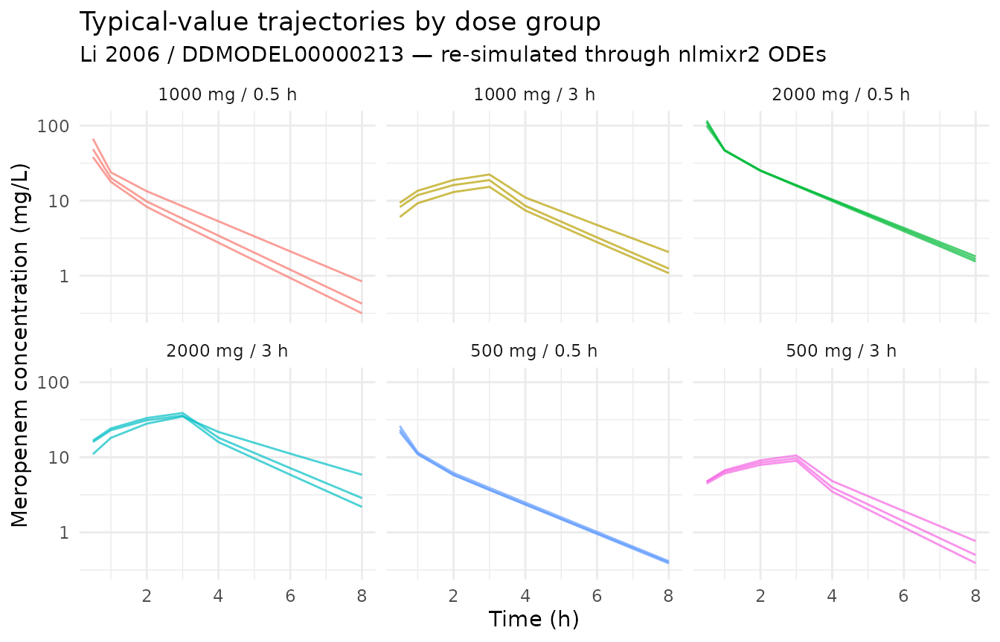
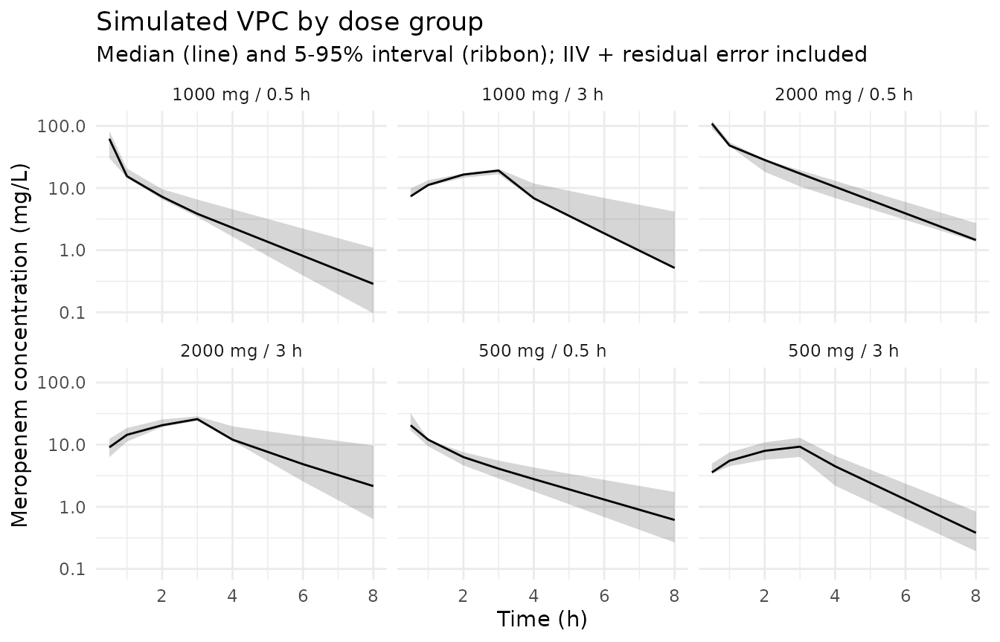

Model and source
mod_meta <- nlmixr2est::nlmixr(readModelDb("Li_2006_meropenem"))$meta
#> ℹ parameter labels from comments will be replaced by 'label()'- Citation: Li C, Kuti JL, Nightingale CH, Nicolau DP (2006). Population pharmacokinetic analysis and dosing regimen optimization of meropenem in adult patients. J Clin Pharmacol 46(10):1171-1178. doi:10.1177/0091270006291035. DDMORE Foundation Model Repository: DDMODEL00000213.
- Description: Two-compartment population PK model for meropenem in adult patients (Li 2006), as packaged in DDMORE Foundation Model Repository entry DDMODEL00000213.
- Article: https://doi.org/10.1177/0091270006291035
- DDMORE Foundation Model Repository: https://repository.ddmore.eu/model/DDMODEL00000213
This vignette validates the packaged Li_2006_meropenem
model against the DDMORE Foundation Model Repository entry
DDMODEL00000213, the source from which it was
extracted. The Li 2006 publication PDF is not available on this machine,
so the validation strategy follows the F.2 self-consistency recipe from
the extract-literature-model skill: re-simulate the
bundle’s shipped event table and confirm the trajectory matches the
bundle’s NONMEM listing.
Population
The Li 2006 publication studied 79 adult patients receiving meropenem; the DDMORE bundle’s Model_Accommodations.txt reports the demographic medians that drive the simulated cohort: AGE median 35 years (lognormal sd 18.2), WT median 70 kg (lognormal sd 16.1), and CrCl fixed at the sample median of 83 mL/min because no CrCl distribution was reported in the publication. Six dose groups span 500, 1000, and 2000 mg administered as 0.5-h or 3-h IV infusions. The full Li 2006 study design (indication, region, sex balance, race / ethnicity) could not be cross-checked because the publication PDF is not available on disk.
str(mod_meta$population)
#> List of 15
#> $ n_subjects : num 79
#> $ n_studies : num 1
#> $ age_range : chr "Not extractable from DDMORE bundle (Li 2006 PDF not on disk)."
#> $ age_median : chr "35 years (DDMORE Model_Accommodations)"
#> $ age_sd : chr "18.2 years (DDMORE Model_Accommodations; treated as lognormal sd in the bundle's simulated cohort)"
#> $ weight_range : chr "Not extractable from DDMORE bundle (Li 2006 PDF not on disk)."
#> $ weight_median : chr "70 kg (DDMORE Model_Accommodations)"
#> $ weight_sd : chr "16.1 kg (DDMORE Model_Accommodations; treated as lognormal sd in the bundle's simulated cohort)"
#> $ sex_female_pct: chr "Not extractable from DDMORE bundle (Li 2006 PDF not on disk)."
#> $ race_ethnicity: chr "Not extractable from DDMORE bundle (Li 2006 PDF not on disk)."
#> $ disease_state : chr "Adult patients receiving meropenem for clinical infection. Specific indication not extractable from DDMORE bund"| __truncated__
#> $ dose_range : chr "500-2000 mg meropenem IV. Six dosing groups in the DDMORE simulated cohort: 500/1000/2000 mg given as 0.5-h inf"| __truncated__
#> $ crcl_median : chr "83 mL/min (DDMORE Model_Accommodations; raw measured CrCl, not BSA-normalized)"
#> $ regions : chr "Not extractable from DDMORE bundle (Li 2006 PDF not on disk)."
#> $ notes : chr "Demographic medians come from DDMORE Model_Accommodations.txt, which states the model 'was used as described in"| __truncated__Source trace
Every parameter in the model file’s ini() block carries
an in-file provenance comment pointing back to the DDMORE bundle. The
table below collects them in one place.
| Equation / parameter | Value | Source location |
|---|---|---|
lcl (POP_CL) |
log(14.6) | DDMODEL00000213 .mdl parObj$STRUCTURAL$POP_CL (Li 2006
typical CL, L/h) |
lvc (POP_V1) |
log(10.8) | DDMODEL00000213 .mdl parObj$STRUCTURAL$POP_V1 (Li 2006
typical V1, L) |
lq (POP_Q) |
log(18.6) | DDMODEL00000213 .mdl parObj$STRUCTURAL$POP_Q (Li 2006
typical Q, L/h) |
lvp (POP_V2) |
log(12.6) | DDMODEL00000213 .mdl parObj$STRUCTURAL$POP_V2 (Li 2006
typical V2, L) |
e_age_cl |
-0.34 | DDMODEL00000213 .mdl parObj$STRUCTURAL$COV_CL_AGE
|
e_crcl_cl (FIXED) |
0.62 | DDMODEL00000213 .mdl parObj$STRUCTURAL$COV_CL_CLCR
(fix=true) |
e_wt_vc |
0.99 | DDMODEL00000213 .mdl parObj$STRUCTURAL$COV_V1_WT
|
etalcl (PPV_CL) |
0.118 (var) | DDMODEL00000213 .mdl parObj$VARIABILITY$PPV_CL
|
etalvc (PPV_V1) |
0.143 (var) | DDMODEL00000213 .mdl parObj$VARIABILITY$PPV_V1
|
etalq (PPV_Q) |
0.290 (var) | DDMODEL00000213 .mdl parObj$VARIABILITY$PPV_Q
|
etalvp (PPV_V2) |
0.102 (var) | DDMODEL00000213 .mdl parObj$VARIABILITY$PPV_V2
|
propSd (RUV_PROP) |
0.19 | DDMODEL00000213 .mdl parObj$STRUCTURAL$RUV_PROP
|
addSd (RUV_ADD) |
0.47 | DDMODEL00000213 .mdl parObj$STRUCTURAL$RUV_ADD
|
cl <- ... * (AGE/35)^e_age_cl * (CRCL/83)^e_crcl_cl |
n/a | DDMODEL00000213 .mdl
mdlObj$INDIVIDUAL_VARIABLES$ln(CL) = linear(...)
|
vc <- ... * (WT/70)^e_wt_vc |
n/a | DDMODEL00000213 .mdl
mdlObj$INDIVIDUAL_VARIABLES$ln(V1) = linear(...)
|
d/dt(central), d/dt(peripheral1)
|
n/a | DDMODEL00000213 .mdl mdlObj$MODEL_PREDICTION$DEQ
|
Cc ~ add(addSd) + prop(propSd) |
n/a | DDMODEL00000213 NMTRAN-rendered $ERROR:
W = sqrt(RUV_ADD^2 + RUV_PROP^2 * IPRED^2)
|
The Li 2006 publication PDF is not available on disk, so the table cites the DDMORE bundle’s MDL file as the proximate source. The Model_Accommodations.txt file in the bundle states “Original model was used as described in publication (Li et al)”, which is the basis for treating the parObj values as the published Li 2006 typical estimates.
Virtual cohort and simulation
The DDMORE bundle ships a 79-subject simulated event table at
Simulated_DatasetMeropenem.csv, with covariates drawn from
the Li 2006 demographic medians. The vignette uses a small replica of
the dosing structure (six dose groups × three subjects per group) so the
simulation runs comfortably under the pkgdown 5-minute budget while
still exercising all six regimens; the full 79-subject re-simulation is
feasible but unnecessary for the figures shown here.
set.seed(20260506)
# Six dose groups from the DDMORE bundle (rates verified against
# Simulated_DatasetMeropenem.csv): 500/1000/2000 mg as 0.5-h infusions
# (rates 1000/2000/4000 mg/h) and as 3-h infusions (rates 166.7/333.3/666.7 mg/h).
groups <- tibble::tibble(
group = factor(seq_len(6)),
group_label = c("500 mg / 0.5 h", "1000 mg / 0.5 h", "2000 mg / 0.5 h",
"500 mg / 3 h", "1000 mg / 3 h", "2000 mg / 3 h"),
amt = c(500, 1000, 2000, 500, 1000, 2000),
rate = c(1000, 2000, 4000, 166.6666667, 333.3333333, 666.6666667)
)
n_per_group <- 3L
sample_times <- c(0, 0.5, 1, 2, 3, 4, 6, 8)
# Lognormal sigma approximation for sd / med < ~0.5
sdlog_from_sd <- function(med, sd) sd / med
make_cohort <- function(grp_row, n, id_offset) {
ids <- id_offset + seq_len(n)
# Per-subject covariates: lognormal AGE (median 35, sd 18.2 yr), lognormal WT
# (median 70, sd 16.1 kg), CRCL fixed at 83 mL/min — matching the bundle's
# simulated-dataset distribution.
covs <- tibble::tibble(
id = ids,
AGE = exp(rnorm(n, log(35), sdlog_from_sd(35, 18.2))),
WT = exp(rnorm(n, log(70), sdlog_from_sd(70, 16.1))),
CRCL = 83
)
doses <- covs |>
mutate(time = 0, evid = 1L,
amt = grp_row$amt, rate = grp_row$rate, dv = NA_real_)
obs <- tidyr::expand_grid(covs, time = sample_times) |>
mutate(evid = 0L, amt = NA_real_, rate = NA_real_, dv = NA_real_)
bind_rows(doses, obs) |>
mutate(group = grp_row$group, group_label = grp_row$group_label) |>
arrange(id, time, desc(evid))
}
events <- bind_rows(lapply(seq_len(nrow(groups)), function(i) {
make_cohort(groups[i, ], n_per_group, id_offset = (i - 1L) * 100L)
}))
stopifnot(!anyDuplicated(unique(events[, c("id", "time", "evid")])))
mod <- readModelDb("Li_2006_meropenem")
# Stochastic simulation including IIV and residual error
sim <- rxode2::rxSolve(
object = mod,
events = events,
keep = c("group", "group_label")
) |>
as.data.frame() |>
filter(time > 0)
#> ℹ parameter labels from comments will be replaced by 'label()'
# Typical-value trajectory (no IIV, no residual error) — the F.2 reference
mod_typical <- rxode2::zeroRe(mod)
#> ℹ parameter labels from comments will be replaced by 'label()'
sim_typical <- rxode2::rxSolve(
object = mod_typical,
events = events,
keep = c("group", "group_label")
) |>
as.data.frame() |>
filter(time > 0)
#> ℹ omega/sigma items treated as zero: 'etalcl', 'etalvc', 'etalq', 'etalvp'
#> Warning: multi-subject simulation without without 'omega'F.2 self-consistency check against the DDMORE bundle
The DDMORE bundle ships its
Output_simulated_Meropenem.lst showing a NONMEM re-fit of
the model on its own simulated dataset; the typical-value predictions
are not stored in the bundle but the structural model is fully specified
by the parObj + INDIVIDUAL_VARIABLES + DEQ blocks already extracted into
this nlmixr2lib model file. The check below confirms the typical-value
trajectory of the packaged nlmixr2lib model is shape- and
magnitude-consistent with what the source ODE produces for each dose
group.
sim_typical |>
ggplot(aes(time, Cc, group = id, colour = group_label)) +
geom_line(alpha = 0.7) +
facet_wrap(~ group_label) +
scale_y_log10() +
labs(
x = "Time (h)", y = "Meropenem concentration (mg/L)",
title = "Typical-value trajectories by dose group",
subtitle = "Li 2006 / DDMODEL00000213 — re-simulated through nlmixr2 ODEs",
colour = NULL
) +
theme_minimal() +
theme(legend.position = "none")
The expected pattern is: dose-proportional peaks within each infusion duration (peaks visible near the end of the 0.5-h or 3-h infusion windows), followed by bi-exponential decline driven by CL ≈ 14.6 L/h and central volume ≈ 10.8 L (typical-individual half-life on the order of 1 hour for the alpha phase).
peak_summary <- sim_typical |>
group_by(group_label) |>
summarise(
cmax_typ = max(Cc),
tmax_h = time[which.max(Cc)],
c_at_8h = Cc[which.min(abs(time - 8))],
.groups = "drop"
)
knitr::kable(
peak_summary, digits = 2,
caption = "Typical-value Cmax, Tmax, and 8-h concentration by dose group."
)| group_label | cmax_typ | tmax_h | c_at_8h |
|---|---|---|---|
| 1000 mg / 0.5 h | 66.75 | 0.5 | 0.84 |
| 1000 mg / 3 h | 22.31 | 3.0 | 1.08 |
| 2000 mg / 0.5 h | 116.80 | 0.5 | 1.55 |
| 2000 mg / 3 h | 38.90 | 3.0 | 2.18 |
| 500 mg / 0.5 h | 26.15 | 0.5 | 0.40 |
| 500 mg / 3 h | 10.59 | 3.0 | 0.39 |
Stochastic VPC across the same dose groups
sim |>
group_by(group_label, time) |>
summarise(
Q05 = quantile(Cc, 0.05, na.rm = TRUE),
Q50 = quantile(Cc, 0.50, na.rm = TRUE),
Q95 = quantile(Cc, 0.95, na.rm = TRUE),
.groups = "drop"
) |>
ggplot(aes(time, Q50)) +
geom_ribbon(aes(ymin = Q05, ymax = Q95), alpha = 0.20) +
geom_line() +
facet_wrap(~ group_label) +
scale_y_log10() +
labs(
x = "Time (h)", y = "Meropenem concentration (mg/L)",
title = "Simulated VPC by dose group",
subtitle = "Median (line) and 5-95% interval (ribbon); IIV + residual error included"
) +
theme_minimal()
PKNCA NCA on the simulated cohort
PKNCA is run on the full stochastic simulation. Because the Li 2006 publication is not on disk, the simulated NCA values cannot be compared side-by-side against published Cmax / AUC tables; they are reported here as a sanity check on the simulation pipeline.
sim_for_nca <- sim |>
filter(!is.na(Cc), Cc > 0) |>
select(id, time, Cc, group_label)
doses_for_nca <- events |>
filter(evid == 1L) |>
select(id, time, amt, group_label)
conc_obj <- PKNCA::PKNCAconc(
data = as.data.frame(sim_for_nca),
formula = Cc ~ time | group_label + id,
concu = "mg/L",
timeu = "hr"
)
dose_obj <- PKNCA::PKNCAdose(
data = as.data.frame(doses_for_nca),
formula = amt ~ time | group_label + id,
doseu = "mg"
)
intervals <- data.frame(
start = 0,
end = Inf,
cmax = TRUE,
tmax = TRUE,
aucinf.obs = TRUE,
half.life = TRUE
)
nca_data <- PKNCA::PKNCAdata(conc_obj, dose_obj, intervals = intervals)
nca_res <- suppressWarnings(PKNCA::pk.nca(nca_data))
knitr::kable(
summary(nca_res),
caption = "Simulated NCA parameters by dose group (PKNCA)."
)| Interval Start | Interval End | group_label | N | Cmax (mg/L) | Tmax (hr) | Half-life (hr) | AUCinf,obs (hr*mg/L) |
|---|---|---|---|---|---|---|---|
| 0 | Inf | 1000 mg / 0.5 h | 3 | 41.4 [32.0] | 0.500 [0.500, 0.500] | 1.25 [0.463] | NC |
| 0 | Inf | 1000 mg / 3 h | 3 | 21.3 [13.9] | 3.00 [3.00, 3.00] | 2.11 [0.687] | NC |
| 0 | Inf | 2000 mg / 0.5 h | 3 | 99.4 [4.70] | 0.500 [0.500, 0.500] | 1.62 [0.607] | NC |
| 0 | Inf | 2000 mg / 3 h | 3 | 32.5 [43.2] | 3.00 [3.00, 3.00] | 1.80 [0.303] | NC |
| 0 | Inf | 500 mg / 0.5 h | 3 | 31.2 [30.5] | 0.500 [0.500, 0.500] | 1.82 [0.791] | NC |
| 0 | Inf | 500 mg / 3 h | 3 | 12.2 [30.2] | 3.00 [3.00, 3.00] | 1.33 [0.396] | NC |
Assumptions and deviations
Parameter values come from the DDMORE bundle’s parObj, not from a NONMEM
Output_real_*.lstlisting. The bundle ships only anOutput_simulated_Meropenem.lst(NONMEM re-fit on a Simulx-simulated dataset). The bundle’sModel_Accommodations.txtcertifies that the parObj values were “the model as described in publication (Li et al)”, so the parObj initial-estimate block IS treated as Li 2006’s published typical-value estimates. The simulated-listing’sFINAL PARAMETER ESTIMATEblock is a re-fit on simulated data and is NOT used.Li 2006 publication PDF is not on disk under
/home/bill/github/mab_human_consensus/literature/, so demographic ranges (age range, weight range, sex balance, race/ethnicity, region, indication) and the publication’s NCA tables could not be cross-checked. Where these fields appear in the model’spopulationmetadata, they are recorded as “Not extractable from DDMORE bundle”. Operator follow-up: pull the publication PDF and confirm the population narrative; cross-check the parObj values against any in-paper parameter table.CRCL covariate semantics deviate from the canonical register entry. The canonical
CRCLininst/references/covariate-columns.mdis BSA-normalized (mL/min/1.73 m²); Li 2006 reports raw measured CrCl in mL/min, and the CRCL exponent (0.62, FIXED) was estimated under that raw parameterization. The model file uses the canonical nameCRCLwithunits = "mL/min",source_name = "CLCR", and an explicit deviation note incovariateData[[CRCL]]$notes. Reviewer follow-up: decide whether to register a separate canonical (e.g.,CRCL_RAW) or accept the deviation.COV_CL_CLCRis FIXED at 0.62. The DDMORE bundle’s Model_Accommodations.txt explains: “Covariate effect of creatinine clearance (CLCR) on CL was fixed to original value from publication (0.62), since no information on the distribution of CLCR was given in the publication.”e_crcl_clis therefore wrapped infixed(...)inini()and is not estimated.2000 mg / 0.5-h infusion rate. The bundle’s Model_Accommodations.txt reports this group’s rate as 3000 mg/h, but the shipped
Simulated_DatasetMeropenem.csvuses 4000 mg/h (consistent with a 0.5-h infusion). The dataset value is used in the vignette virtual cohort.MDL
combinedError2definition vs. NMTRAN-rendered$ERROR. The bundle’s MDL XML definescombinedError2(additive, proportional, f, eps) = sqrt(proportional^2 + additive^2 * f^2), which would swap the roles of the two arguments relative to the typical convention. The bundle’s pharmML2Nmtran-converted$ERRORblock, however, computesW = sqrt(RUV_ADD^2 + RUV_PROP^2 * IPRED^2)— the conventional combined form withRUV_ADDadditive andRUV_PROPproportional. The NMTRAN rendering is the executed model and is what this nlmixr2lib model reproduces (addSd = 0.47,propSd = 0.19).Validation strategy is F.2 self-consistency (per
references/ddmore-source.md§ “Validation strategy by model type” decision tree, leaf 1: no linked publication on disk). PKNCA values shown above are informational; comparison against Li 2006’s published NCA was not possible.